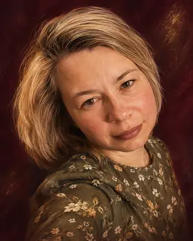

МАТРИЦА СУДЬБЫ
Полный разбор матрицы
Основные энергии даты рождения, личные задачи, сильные стороны, повторяющиеся темы и направления развития.
Обсудить разбор ↗АЛЛА · АВТОРСКОЕ ПРОСТРАНСТВО
Матрицы судьбы, карма рода, предназначение, совместимость, нумерология и Таро. В моих разборах отдельные символы складываются в цельную историю.

✧АВТОРСКИЕ НАПРАВЛЕНИЯ
Каждая работа строится вокруг конкретного запроса. Объём, формат и стоимость согласовываются индивидуально.
МАТРИЦА СУДЬБЫ
Основные энергии даты рождения, личные задачи, сильные стороны, повторяющиеся темы и направления развития.
Обсудить разбор ↗КАРМА РОДА
Символические программы родовых линий, повторяющиеся сюжеты, задачи и ресурсы семейной истории.
Обсудить разбор ↗СТРУКТУРА РОДА
Подробный анализ структуры родового квадрата, пересечений и общей картины родовых тем.
Обсудить разбор ↗ПРЕДНАЗНАЧЕНИЕ
Рассмотрение личного, социального и родового предназначения и их взаимосвязей в матрице.
Обсудить разбор ↗ДВА ЧЕЛОВЕКА
Символический анализ взаимодействия, точек притяжения, различий, общих задач и динамики пары.
Обсудить разбор ↗ЧИСЛА И АРКАНЫ
Персональные расчёты, кармические темы и авторские расклады с подробной связной трактовкой.
Обсудить разбор ↗МОЙ ПОДХОД
В разборе важно не просто перечислить символы и трактовки, а связать их между собой: показать, как личные темы переплетаются с семейной историей, какие противоречия и ресурсы заметны в общей структуре.
Матрицы, нумерология и карты рассматриваются как символические системы для размышления и самопознания, а не как научная диагностика или неизменный сценарий жизни.
Прайс и услуги Аллы ↗АВТОРСКИЕ РАЗБОРЫ АЛЛЫ